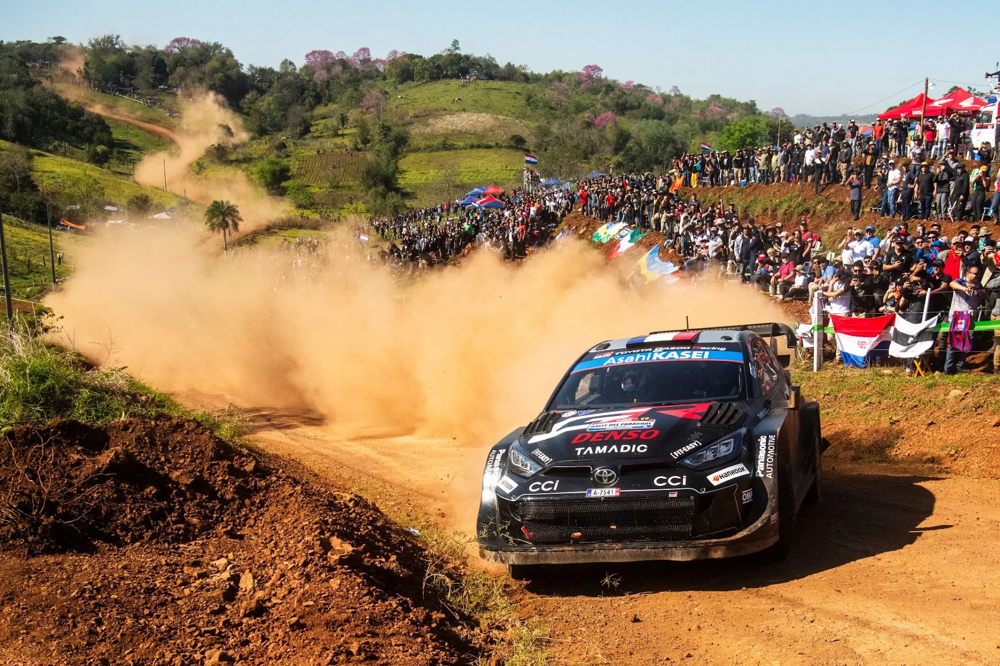
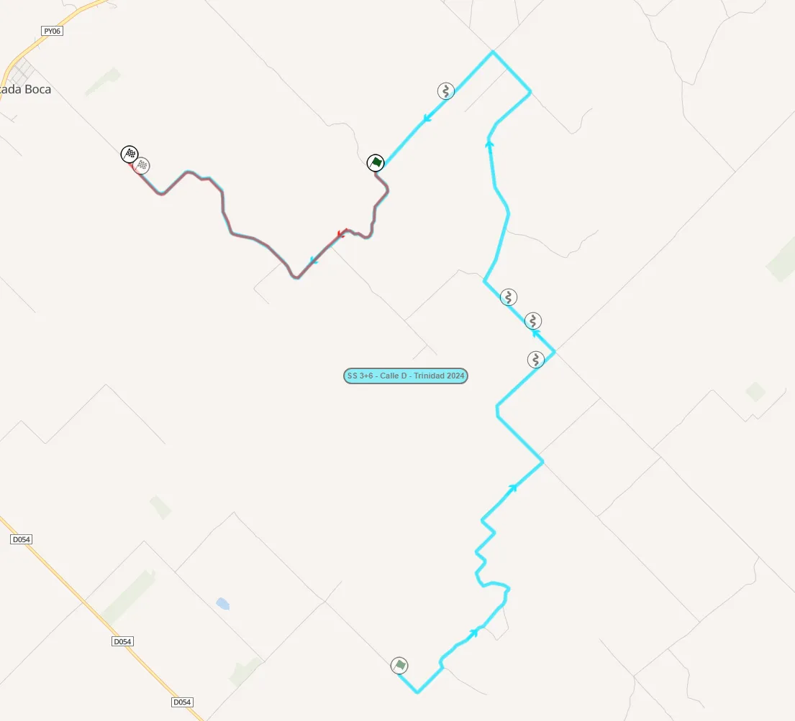
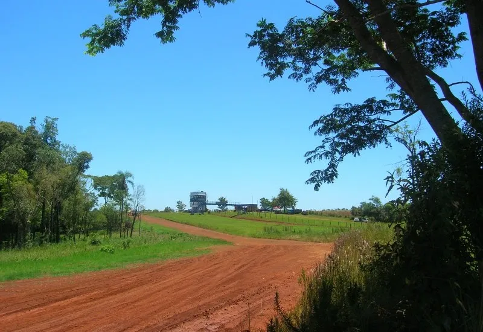
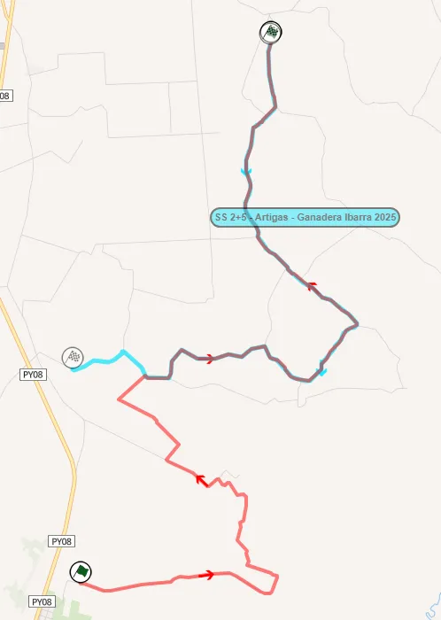
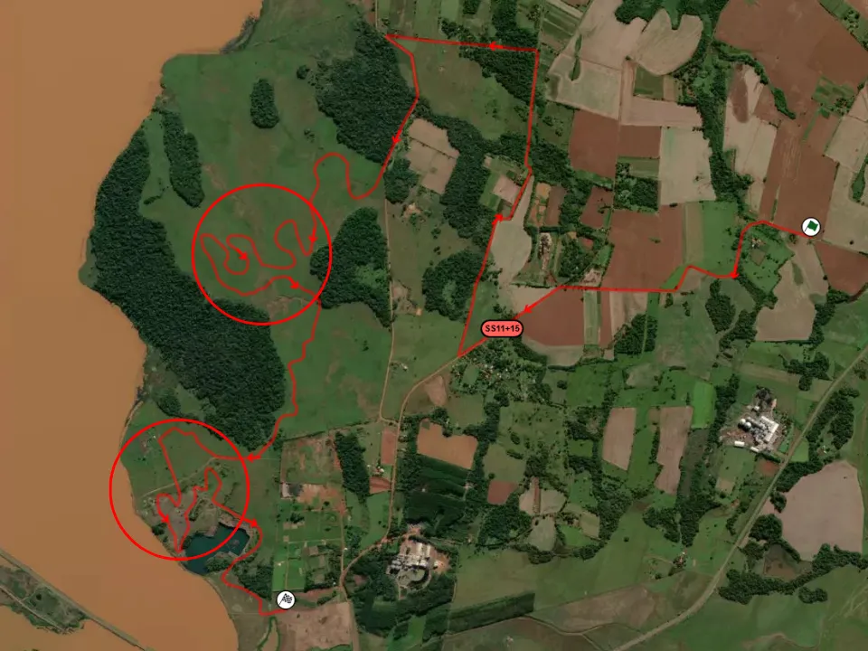

Rally Paraguay 2025 - Route Preview
Cover and thumbnail: Jaanus Ree / Red Bull Content Pool
Maps: Rally-Maps.com
Rally Paraguay plays host tο the 10th round of the 2025 WRC season, and is a brand new event to the WRC calendar. It features a mix of rough and fast roads, while also having sections reminiscent of the Safari Rally, Rally Australia, Rally Indonesia, and Rally Chile. The event is based in Encarnacion near the border with Argentina, and uses roads previously used in the Trans Itapua Rally.
Thursday
Thursday features a run of the pre-event Shakedown, as well as the Ceremonial Start in Encarnacion.
Shakedown: Trinidad - 4.92km
Changes compared to past editions: Last 5km of SS Calle D - Trinidad from last year's Rally Paraguay

Stage description: The Shakedown stage is initially on a fast and wide road that is generally smooth. There is a quite rough section at 0.9km, but after that the stage is again fast, going downhill.
The road becomes narrower after a bridge crossing at 2.2km, and continues uphill. There is a crest at 2.9km, after which the stage again goes downhill.
The rest of the test is mostly on fast and relatively smooth roads, with a small section at 3.52km being rough.
Friday
Friday is the longest day of the rally, at 140.9 competitive kilometres. It features two loops of four repeated stages, one of which is a Super Special Stage. The three proper stages are all to the east of Encarnacion and are reminiscent of sections seen in Safari Rally Kenya, Rally Australia, and Rally Chile.
SS1/5 Cambyreta - 18.70km
Changes compared to past editions: The Calle B- Cambyreta stage from this year's Rally Trans Itapua, only in reverse. It's been used frequently in past editions of the rally.
Stage description: The start is on a quite narrow and very rough road, with bedrock and rocks often appearing on the surface. It's also very slow and technical.
After a junction at 2.1km, the stage leaves the forest and heads onto an open section, which is a lot like the Loldia stage from Safari, with grass in the middle of the road. Some sections here are very rough, including one very rough passage with many rocks at 4.4km.
At 5.6km, the road becomes very wide and faster, but still has many rocks and potholes. There's a crest at 7.1km, after which there's another very rough passage with bedrock appearing. The stage then becomes narrower following a junction at 7.7km.
A high-speed section follows, on a mostly narrow road. It features crests and some quite rough parts, with dips and bumps. This section is interrupted by a detour at 10km, on a road resembling the one from the start, which is narrow and rough. It continues onto the previous road at about 11km. The stage becomes narrower and rougher at 12.4km, with very rough passages caused by washouts.
After a junction at 14.4km, the stage is now fast on a wide and smooth road. It remains the same until the end, only interrupted by another "Safari" section from 15.6 to 16.6km.
SS2/6 Nueva Alborada - 19.25km
Changes compared to past editions: Has been used many times in the Trans Itapua rally, as well as last year's Paraguay Rally. It has been used in both this, and the reverse direction.
Stage description: It starts off on a narrow and technical road, but becomes wider and faster after one kilometer. Almost all of the stage is very reminiscent of Rally Australia back when the rally was held in Perth. Orange-ish surface, with green banks on each side of the road, and a mix of very fast and also some technical and sinuous sections.
Onboard of the stage from 2019, which is very similar to the one due to be used this year
From 2 to 4.9km, the stage is high-speed, with a mix of fast and 90-degree corners. Following a rough passage at 5.3km, the road becomes narrower and more technical, but remains quite fast. There is a flat-out section from 7km onwards.
Following a junction at 8.21km, the stage joins a wider road, which is smoother and has big crests. It remains fast and wide up until yet another junction at 10.4km, where it joins the forest and becomes narrower. It's quite similar to the road before the fast and wide one.
It then again becomes wider and smoother at 13.89km momentarily, before becoming narrower and more technical at 16.9km, remaining the same until the finish.
SS3/7 Yerbatera - 30km
Changes compared to past editions: The roads of this stage have been used in Rally Trans Itapua under different configurations many times. An almost identical stage was used in Rally de Colonias Unidas, only in reverse.
Stage description: The start of the stage is generally on a fast and wide road, similar to the ones of the previous test, with the stage having a section of downhill cambered turns at about 3.4km.
A flat-out section follows, which is interrupted by a set of 90-degree corners at 5.4 and 5.8km. The stage continues to be high-speed, albeit narrower, and also with surface changes in places, until 9.7km.
It then turns onto a smooth and more sandy road, which is initially technical, but becomes wide and very fast, and also more hard-packed, at 11.3km. This flat-out section is interrupted by a detour that acts as a chicane at about 13km.
Onboard of the stage from 2019, which uses sections used in 2025
This fast and flowing section continues on for 2.3km and features a few crests also.
At 17.2km, the stage becomes more technical and medium speed, on a flowing, narrower road. The stage becomes rougher at 21.5km and also has a roller-coaster style section, with crests and cambered turns.
After another flat-out section on a wide road, it becomes narrower again at 23.2km, with the road having a surface similar to that of SS1/5, with grass in the middle of the road, looking like some of Safari's stages.
It becomes high-speed and smoother quickly after. The last few kilometers of the stage are predominantly very fast, on a flat surface.
SSS4/8/12 Autodromo Alfredo Scheid - 2.50km
Changes compared to past editions: Has been frequently used in Rally Trans Itapua, also as a head-to-head Super Special.

Martin Palacios-Gill / Flickr
Stage description: Friday's closing stage is a very nice SSS. It uses the gravel tracks of the Autodromo Alfredo Scheid, and has a mix of fast and very wide roads, but also narrower, trickier sections, using paths next to the track.
The surface of the stage is also different from other stages on Friday, with a gravel top more akin to a plowed road.
Saturday
Saturday again features three "proper" stages to the west of Encarnacion repeated twice, with the SSS also ran a third time to close out the morning loop. These stages are mostly fast sections joined together by junctions.
SS9/13 Carmen del Parana - 18.67km
Changes compared to past editions: Was used in Rally Paraguay last year, and in this year's Trans Itapua Rally, only in reverse.
Stage description: The first 5km of the stage uses fast sections joined together by 90-degree bends, and is very rough in places. The stage is in an open area from 5.8 to 13 km and is very fast, with fast corners and big straights. Chicanes are placed at 11.7 and 12.7km. Shortly after the second chicane, the stage turns onto a new road which is narrower, more technical, and appears to be rougher from satellite pictures. It passes through a densely forested area at 15.67km.
The end of the stage is on a road that's been dug in for the rally, similar to the start of Soysambu in Safari. It features some long winding turns, and is there for spectators. It has Rio Tacuray as a backdrop.
SS10/14 Artigas - 23.14km
Changes compared to past editions: The first 10.68km have never been used in a rally before. The rest of the stage was used in the opposite direction in this year's Trans Itapua Rally.

Stage description: The first section of the stage is on wide and high-speed roads, in an open area. Some more technical sections appear from 5.7km onwards, and the road becomes sandier in parts. Roads continue to be wide and sandy, and are mostly fast and wide roads connected together by junctions. It's reminiscent of the Sleeping Warrior stage in Safari.
The stage enters the forest at 10.7km, and becomes more technical. The road has banks on either side, and is also narrower. It retains the same character even when it leaves the forested area.
After a brief section next to fields, banks start to appear again at 15.4km, with a high-speed section following.
At 18.7km, the stage joins a road that is rougher and has tall banks and ditches alongside the stage. From 21km on, it becomes more flowing, before the finish.
SS11/15 Cantera - 13.74km
Changes compared to past editions: Parts of the stage were used in Rally Trans Itapua this year, and in Rally Paraguay last year.
Stage description: Similarly to the day's previous stages, Cantera starts off with fast sections, joined together by junctions. It enters the forest at 2.36km, and becomes rougher and narrower in a section reminiscent of Safari.
After a junction at 5km, the stage joins a very wide and smooth road momentarily, before joining a man-made Mickey Mouse section next to the river, similar to the one of SS9/13.
The rest of the stage is on a fast and smooth road, which is very fast. It passes next to Ex cantera de Carmen del Paraná, which is a former quarry that has been turned into an area of natural beauty next to the river Rio Tacuray.

Map of SS11/15. The technical dug-in sections are marked with a circle
Sunday
Sunday is the rally's shortest day at 80.72km, and has two runs of two stages to the north-east of the rally HQ.
SS16/18 Bella Vista - 21.25km
Changes compared to past editions: A Combination of two stages used in Rally de Colonias Unidas. Parts of the stage were used in Trans Itapua in 2024.
Highlights from the Rally de Colonias Unidas stages. It also includes footage of sections used in SS3/7 Yerbatera
Stage description: Just like the stages of Saturday, the start of this one is high-speed sections connected by junctions. The road is smooth, wide, and fast, in an open area. The road acts like a border between the fields and the forest, entering it momentarily at 6km, with a watersplash just after.
The stage becomes less smooth after that, continuing to be mostly fast, passing next to fields, with big straights and junctions.
At 9.2km it widens and a big high-speed section follows, before a junction at 12.3km. The rest of the route is just big straights and high-speed sections linked by junctions.
It becomes rougher at 14.8km, with parts being narrower, before joining a wider, smoother one, leading to the finish.
SS17/19 Mission Jesuitica Trinidad - 18.5km
Changes compared to past editions: The Hohenau - Trinidad stage used in Trans Itapua, with a slightly different finish.
Stage description: The start of the stage is on a wide and fast road, which also passes through private land. There's a detour at 2.1km, which leads to a narrower and rougher passage, which is still quite fast.
At 2.7km, there is an open arena section, where the stage does a loop of sorts, passing under a bridge, then turning around and passing over it. There's a series of jumps at 3.3km and 3.6km, with the road widening and becoming smoother.
A high-speed section follows, with the road becoming super wide at 5km. After a junction at 6km, the stage becomes narrow again, following a mostly smooth and hard-packed road, which is still high-speed.
Following a detour, the stage becomes rougher and then joins a straight road which is rocky, not dissimilar to some Safari sections. At 11.3km, there's an open section passing through private land, where the road widens, and has some slow/medium speed corners.
It leaves this part at 13km, and another big, high-speed section follows. At 16.3km, there is a short cobbled section.
The stage rejoins gravel roads at 17.55km, for the finish. The end of the stage is next to the Jesuitic ruins of Trinidad.


Comments